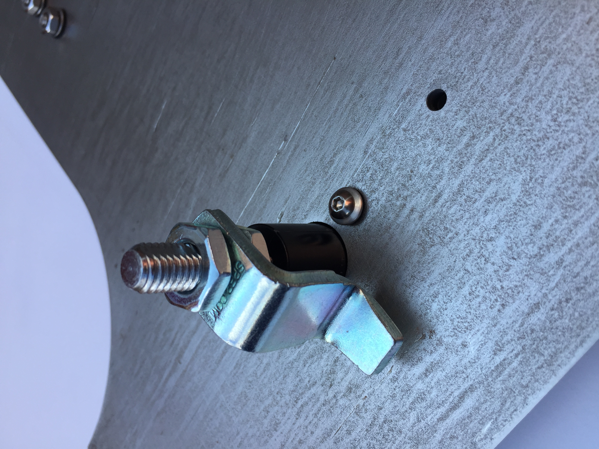
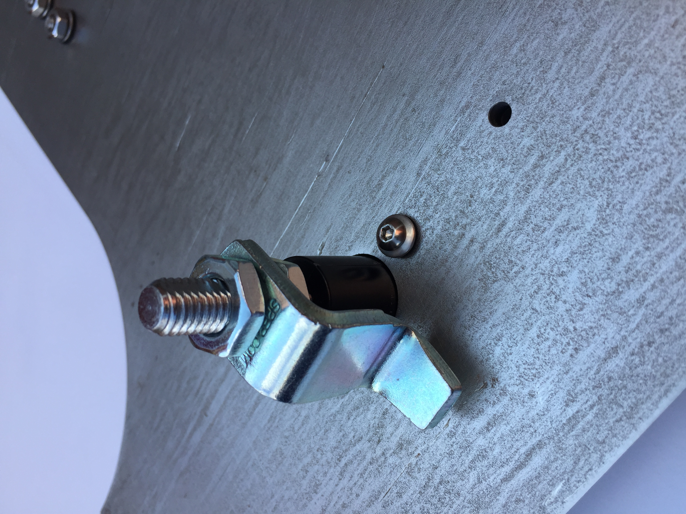
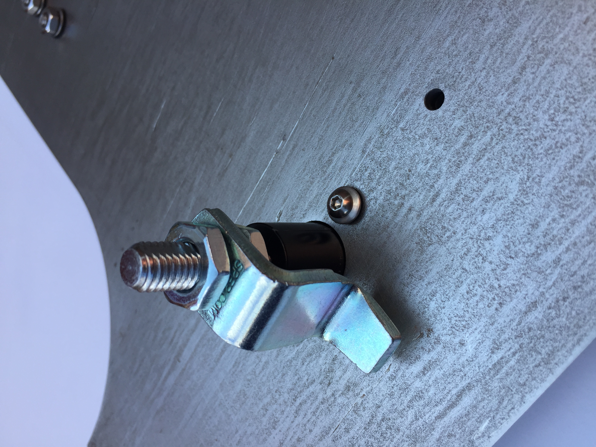

Gallary


 


UConn selective laser sintering (SLS) Testbed is a powder bed fusion (PBF) additive manufacturing (AM) machine. PBF is one of the few AM processes capable of fabricating 3D complex metallic and polymetric parts directly from computer aided designs.
UConn SLS is an open-access additive manufacturing machine that is equipped with smart sensors and actuators, and interchangeable subsystem components.
It serves as a unique testbed to advance our understanding of the mechanisms controlling the additive manufacturing process, and to discover approaches to remedy long existing deficiencies in AM.
270x270x270mm build volume.
Heated chamber/bed
100W CW CO2 Laser
Open access with direct integration of metrology and controls
Ultra high-precision laser scanner
Optical metrology system for feedback control
Sensors: Displacement Sensor, Temperature Sensor, Vision Cameras, Oxygen Sensor, etc
Dr. Xu Chen, Assistant Professor
191 Auditorium Road, Unit 3139 Storrs, CT, 06269-3139
